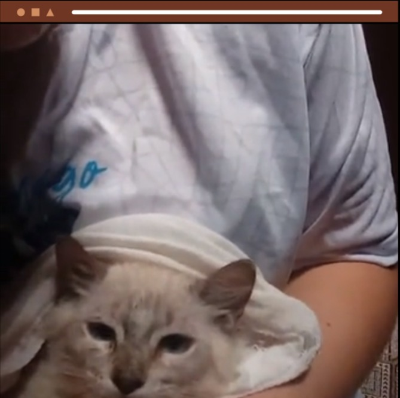

Quem sou eu?
Olá! Eu sou a Amanda, uma protetora independente de Brasília/DF que precisa da sua ajuda para cuidar de mais de 60 ANIMAIS que foram resgatados das ruas do Distrito Federal e região.
Infelizmente, estes animais chegaram até mim, em sua grande maioria, em péssimas condições de saúde. Os gastos para tratar FIV e FELV e outros tipos de doenças, além de cuidar daqueles que foram maltratados pelo ser humano, são altos.
Além disso, os animais consomem cerca de 160 kg de ração por mês, o que deixa o meu trabalho ainda mais desafiador.
FAÇO TUDO POR AMOR E, COM A SUA AJUDA, DEZENAS DE GATINHOS VÃO VENCER!